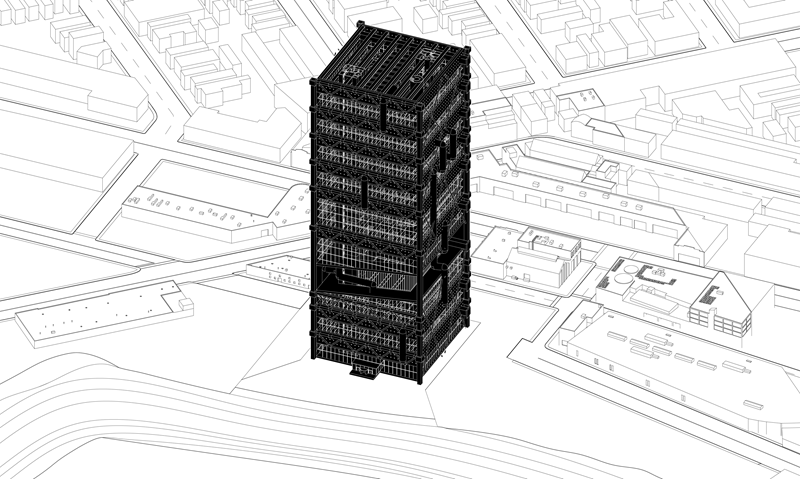
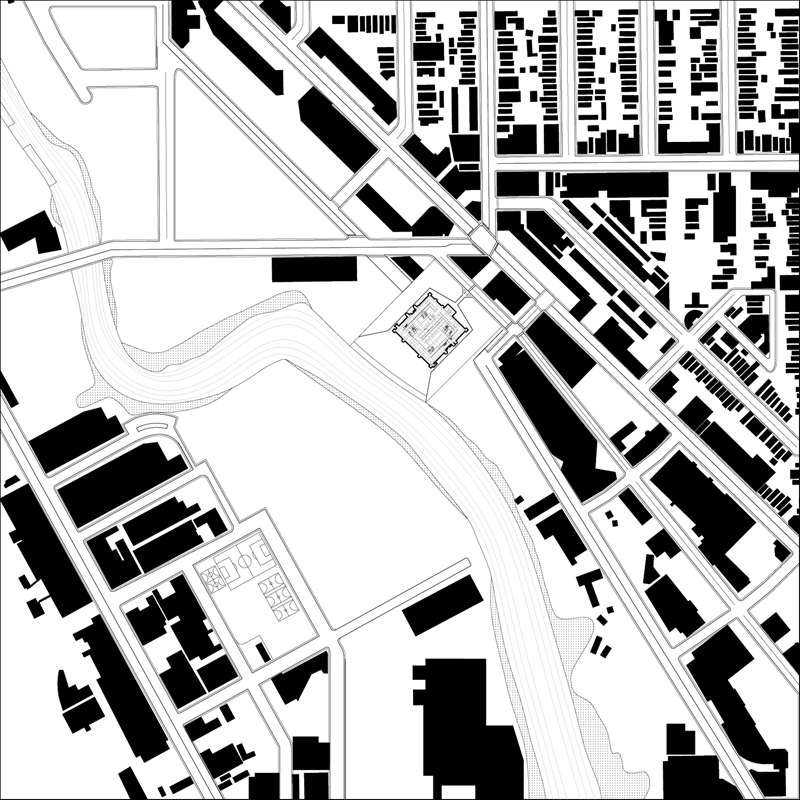
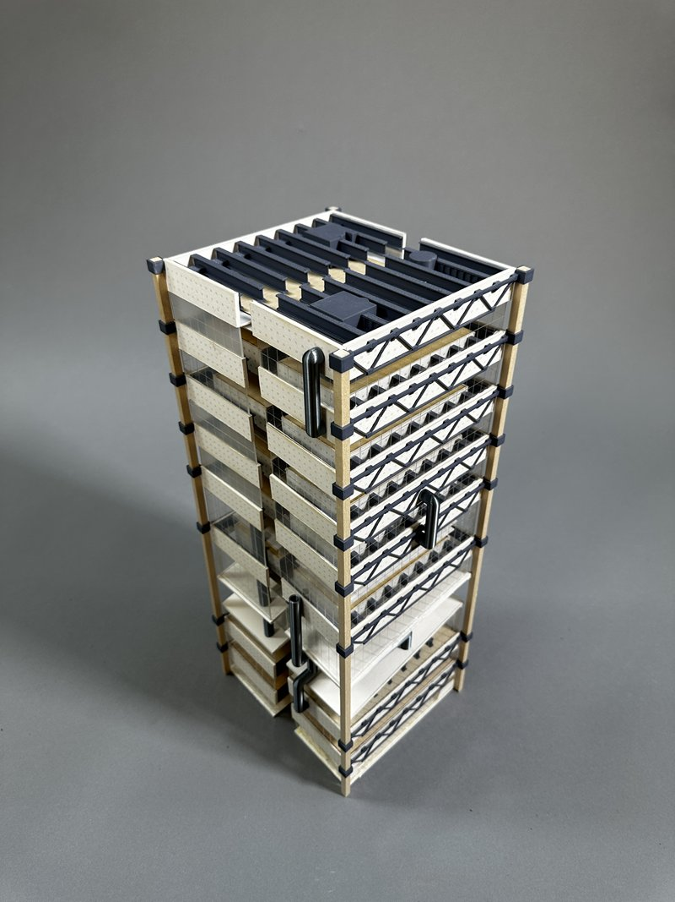
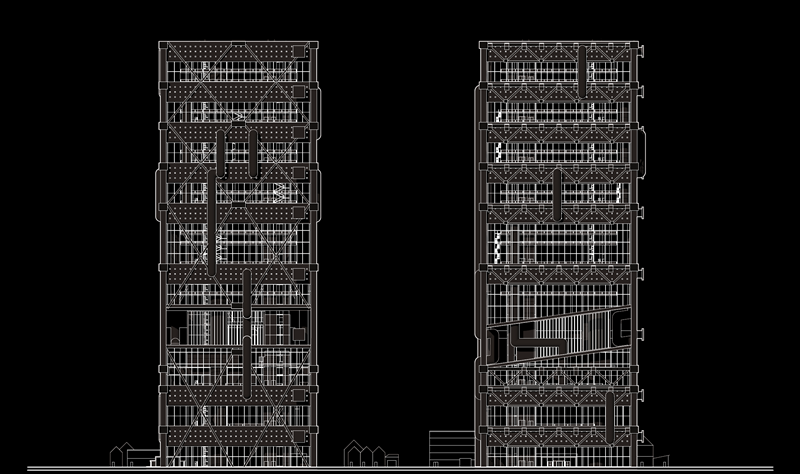
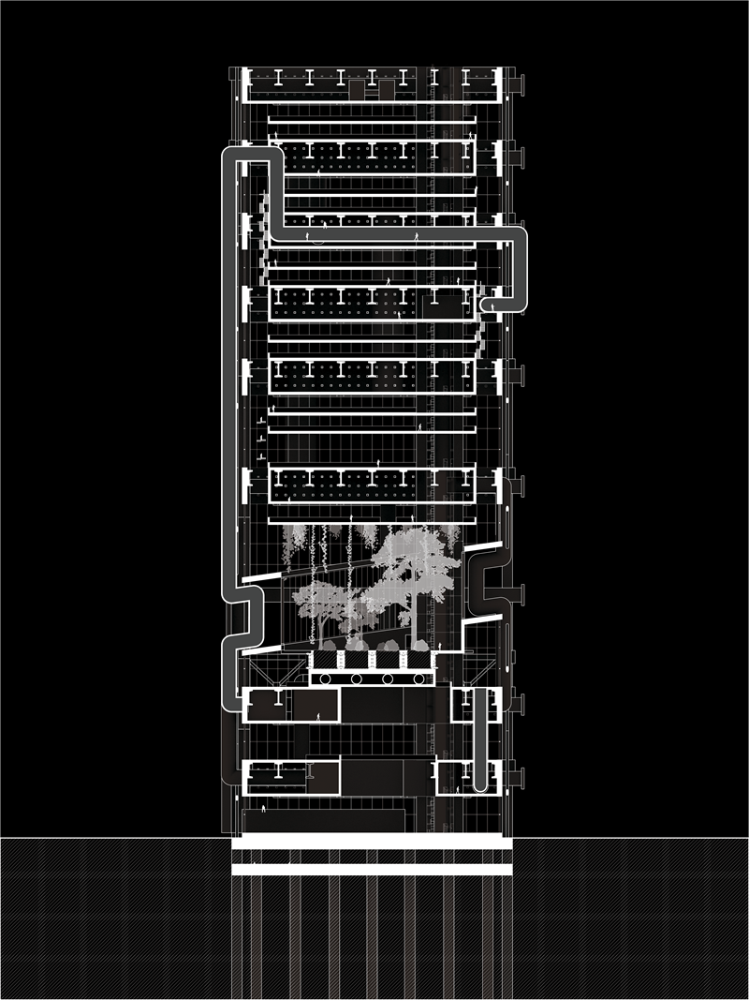
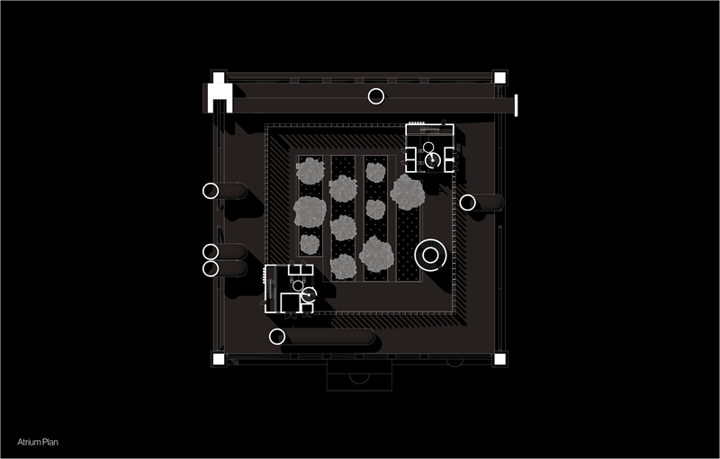
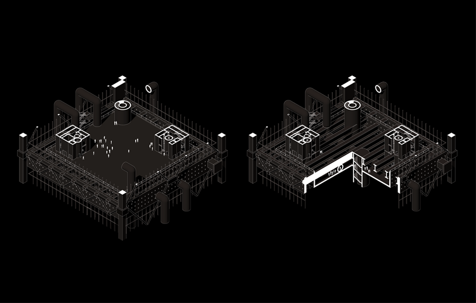

Building — Trades & learning
The Palace of All Trades
A building designed to celebrate the labor of construction and the people who perform it.







Building — Trades & learning
A building designed to celebrate the labor of construction and the people who perform it.






